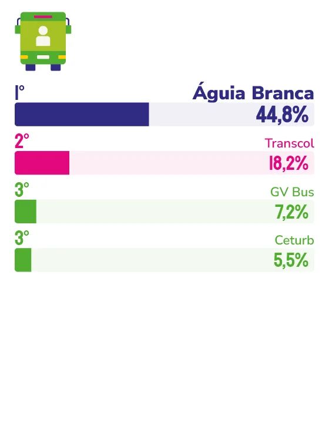

TRANSPORTE RODOVIÁRIO DE PASSAGEIROS
Aos 80 anos e líder no transporte rodoviário de passageiros no Espírito Santo, a Viação Águia Branca segue construindo vínculos onde outros só constroem rota. Tendo segurança como valor inegociável e frota constantemente renovada, a empresa garante uma presença entre os capixabas que vai muito além dos terminais rodoviários.
Oitenta anos não se completam vendendo passagem; completam-se sendo parte da história de quem viaja. Em 2026, a Viação Águia Branca celebra oito décadas de uma presença que extrapola os terminais rodoviários. Para o diretor de Negócios da empresa, Thiago Chieppe Juffo, o reconhecimento espontâneo da população em Marcas Ícones carrega um peso específico. “Ser uma marca ícone não é apenas ser lembrada; é perceber que essa lembrança vem acompanhada de confiança”, afirma.
Essa confiança não nasceu de um único gesto, mas da consistência, das décadas em que a empresa esteve presente nos momentos que importam: nas viagens de fim de ano, nas mudanças de cidade, nos encontros que a distância adiava. “Quando alguém pensa em ônibus de viagem, também pensa em segurança, conforto, bom atendimento e confiança na operação”, diz Juffo. E esse pensamento conduz ao nome da Viação Águia Branca antes de qualquer outro.
A segurança, dentro desse universo, ocupa um lugar que o diretor descreve sem hesitar: inegociável. Ela aparece no treinamento dos motoristas, no monitoramento das operações, na renovação da frota e na tecnologia embarcada. É uma presença silenciosa que o passageiro não vê, mas sente, e que, ao longo de gerações, foi sedimentando uma reputação difícil de contestar.
A empresa também aprendeu cedo que memória afetiva não se constrói só dentro do ônibus. Ela se constrói nas praças, nos palcos e nas quadras de esportes. Por isso, patrocina a Filarmônica de Mulheres do Espírito Santo; a Escola de Futebol de Meninos e Meninas de Santana, em Cariacica, e a Federação Desportiva de Surdos do Espírito Santo. Também leva o “Iluminado” (ônibus que distribui música e clima natalino pelas cidades do estado) e coloca nas ruas veículos com a identidade visual do Festival de Forró de Itaúnas. “Buscamos estar próximos das pessoas para além da venda da passagem”, resume Juffo.
Isso porque o consumidor capixaba de hoje, avalia Juffo, está mais exigente e mais informado. “Ele quer preço competitivo, mas também quer previsibilidade, conforto e uma boa experiência.” A Águia Branca responde a essa demanda com investimentos em digitalização, compra antecipada, opções de ida e volta e expansão de veículos semileito em rotas mais longas dentro do próprio estado. A jornada completa, da compra digital ao pós-viagem, passou a ser objeto de cuidado tão intenso quanto a operação em si.
Neste ano, para celebrar seus 80 anos, a empresa lançou dois ônibus DD G8 com pinturas históricas que homenageiam as décadas de 1980 e 1990. Uma forma de dizer que a memória não é nostalgia, mas fundação.
Quando questionado sobre o que a Águia Branca precisará ser daqui a 15 anos para continuar merecendo esse lugar na memória dos capixabas, Juffo é direto ao afirmar que tudo pode evoluir, mas não se negocia o essencial, ou seja, “o compromisso com a segurança e o respeito pelas pessoas, colocando o capixaba sempre no DNA do negócio”.

Thiago Chieppe Juffo
Diretor de Negócios da Viação Águia Branca
“Quando alguém pensa em ônibus de viagem, também pensa em segurança, conforto, bom atendimento e confiança na operação. A Águia Branca ocupa esse espaço porque está presente na rotina das pessoas e também na vida da própria cidade, por meio das viagens, parcerias, patrocínios e projetos culturais.”
166
